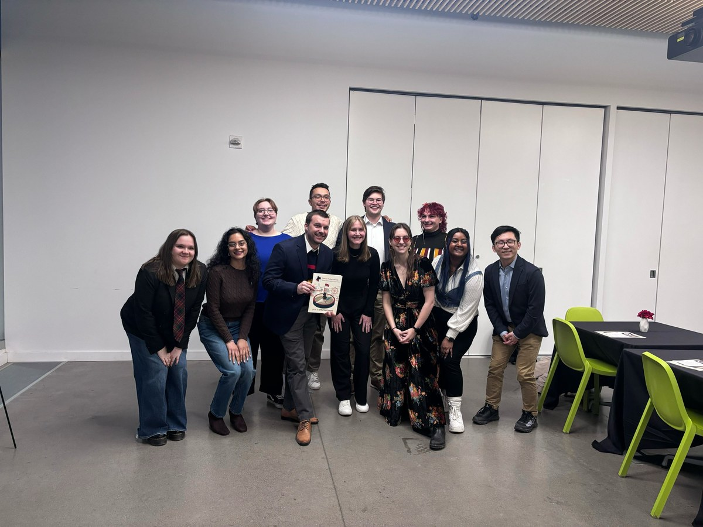
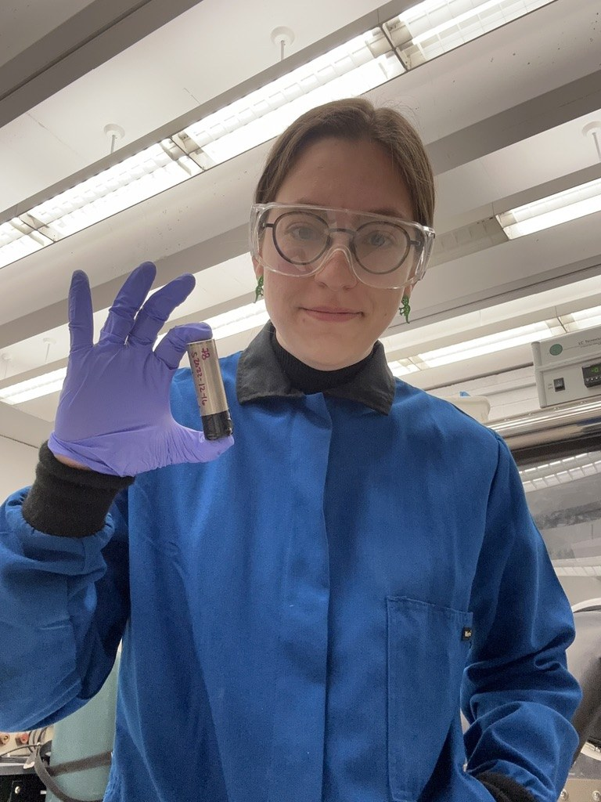
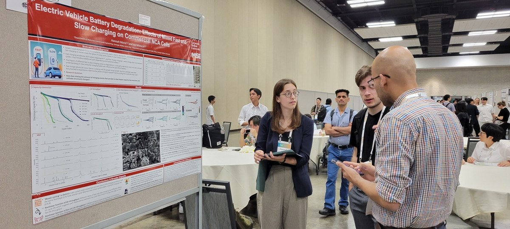
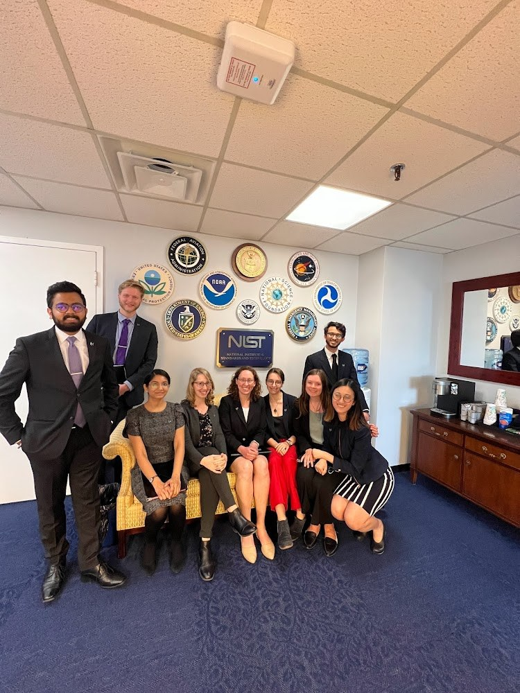

Hannah Morin
Carnegie Mellon University · Pittsburgh, Pennsylvania
Graduating December 2026
Exploring roles in battery R&D, energy storage, and decarbonization policy at companies, labs, and think tanks working on electrification and the grid. If you have an opportunity that might be a fit, please get in touch.
I quantify how electric vehicle batteries actually degrade — and what that costs drivers, automakers, and the grid.
My PhD work — From Particle to Pack to Policy — spans the cell (experiments in the lab), the pack (techno-economic models), and the policy (what regulators and utilities should do about it). I'm a joint PhD across Carnegie Mellon's Engineering and Public Policy and Materials Science and Engineering departments, advised by Prof. Jay Whitacre and Prof. Jeremy Michalek. Sloan Transportation Fellow; recognized with the best PhD Qualifying Paper award in my cohort (Toor Award, 2023).
For technical roles I bring applied battery research that spans the lab bench and the spreadsheet — comfortable with messy real-world data and the questions the literature hasn't answered yet. For policy roles I bring translation: most battery PhDs can't sit in a regulator's office, and most policy people can't read a coin cell datasheet. I do both.

Leadership at Scale
As CMU Graduate Student Assembly President I led a team of 8 with a ~$1M annual budget representing 7,000 grad students. Negotiated with senior university leadership, raised the minimum PhD stipend, and built the Doctoral Stipend Annual Review Committee.

Hands-On Electrochemistry
I run cycling experiments on commercial cells and pouch cells across NCA, NMC, and LFP chemistries using Neware, Biologic, and MACCOR cyclers. I read EIS, ICA, XRD, and SEM data and know what's signal versus noise.

Techno-Economic Modeling
I build degradation cost models that propagate experimental uncertainty all the way to the consumer's wallet — used to compare chemistries, charging behaviors, and business cases for V2X and second-life batteries.

Policy & Advocacy
My V2G work with the NJ Department of Environmental Protection and my advocacy work through GSA — including congressional meetings, op-eds, and a Forbes feature — built the muscle of explaining technical questions to people with decision-making power.
Download CV ·
[email visible after load]